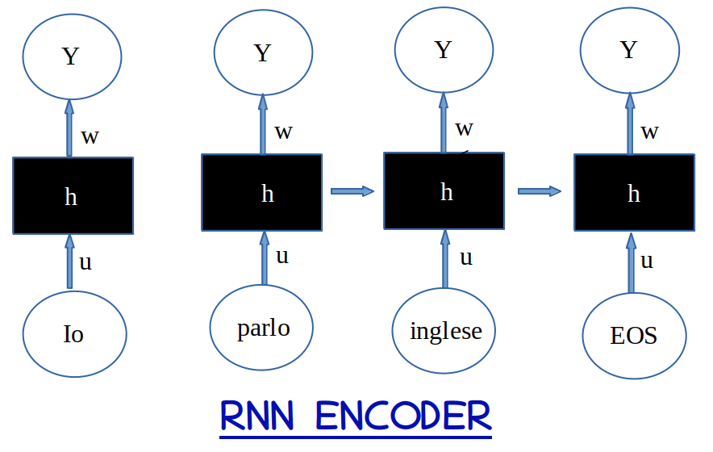
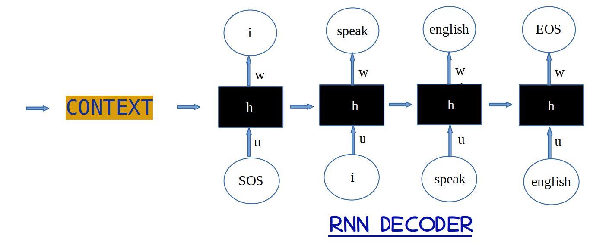
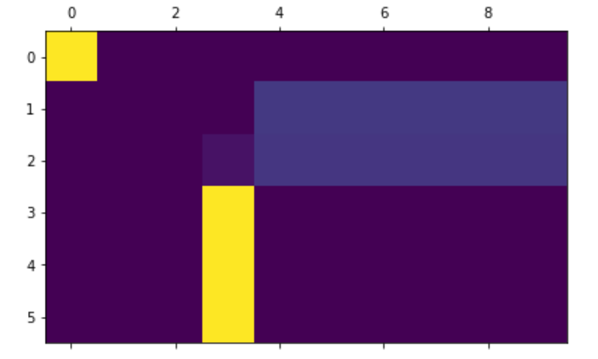
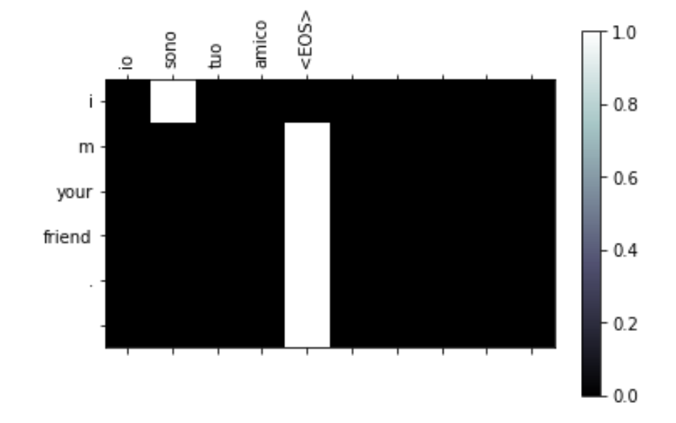

Utilizzando un modello RNN come encoder ed un altro modello RNN come decoder si crea un
modello di translation come ad esempio la translation da una lingua ad un'altra inserendo una sequenza di parole
in una lingua in input ed ottenere in output una sequenza nell'altra lingua.
Questo modello può essere utilizzato anche per altri scopi come ad esempio un modello per Domande-Risposte
per creare un ChatBot o text transcript o text summarization.
Qui prendiamo anche in considerazione anche l'Attention mechanism un nuovo modello che consiste
nel prendere oltre ai context vector i weights creati nell'encoder e li somma con quelli creati dall'attention per poi passarli
in input al decoder per avere un risultato migliore.

Vediamo come in questo esempio si procede dopo aver creato un file di testo che contenga parallelamente
delle frasi con le 2 lingue.
Con la class CreaInputFile per ogni record del file testo come il seguente :
[‘Ciao’, ‘Hello’] si procede alla Normalizzazione(eliminazione punteggiatura)
e si ottiene in output un Tensor che con la utility di Torch creiamo il dataLoader
Vediamo il risultato di CreaInputFile ossia i vocabolari ed il pairs.
inputFile.inputLingua.index2word
{0: 'SOS',
1: 'EOS',
2: 'io',
3: 'non',
4: 'ho',
5: 'fretta',
....}
inputFile.inputLingua.word2count
{'io': 948,
'non': 819,
'ho': 91,
'fretta': 6,
'.': 4959,
'sta': 114,
'facendo': 40,
.... }
inputFile.inputLingua.word2index
{ 'invitato': 945,
'cugine': 946,
'cattiva': 947,
'influenza': 948,
'preziosa': 949,
'fallira': 950,
'interferendo': 951,
'insegnando': 952,
'pericolosa': 953,
'zucchero': 954,
.... }
e così anche in output ...
inputFile.outputLingua.index2word
{....
935: 'also',
936: 'live',
937: 'exaggerating',
938: 'swimming',
939: 'fast',
.... }
inputFile.outputLingua.word2count
{ .....
'eighteen': 3,
'baffled': 1,
'discussing': 1,
'cynical': 1,
'following': 4,
..... }
inputFile.outputLingua.word2index
{ .....
'eighteen': 946,
'baffled': 947,
'discussing': 948,
'cynical': 949,
'following': 950,
'courageous': 951,
..... }
inputFile.pairs
{ .....
['sto soltanto ascoltando .', 'i m just listening .'],
['non sono la .', 'they re not there .'],
['siamo prive di ambizione .', 'we re unambitious .'],
['tu hai diritto alla tua opinione .', 'you are entitled to your opinion .'],
['e bello .', 'you re beautiful .'],
['sono tutti turisti .', 'they re all tourists .'],
..... }
inputFile.tensor
[....
(tensor([[
21],
[ 16],
[ 200],
[ 341],
[1104],
[ 205],
[ 1]]), tensor([[ 17],
[107],
[293],
[ 26],
[403],
[404],
[ 1]]))
.... ]
Dopo aver creato il dataLoader passiamo a definire l'Optimizer Function per l'Encoder ed il Decoder
poi si definisce la Loss Function.
Con la Train Function si creano i modelli per L'EncoderRNN e per l'AttentionDecoderRNN.
Poi con la function test effettueremo una valutazione dei modelli creati inserendo una frase in italiano
ottenendo in output la traduzione in inglese.
from __future__ import unicode_literals, print_function, division
import random
import re
import unicodedata
from io import open
import torch
import torch.nn as nn
import pandas as pd
import matplotlib.pyplot as plt
import matplotlib.ticker as ticker
data = pd.read_csv(filename, sep='\t')
eng = data.iloc[:,0]
ita = data.iloc[:,1]
df = pd.DataFrame({0:ita,1:eng})
with open('ita-eng.txt', 'w') as f:
f.write(
df.to_csv(header = False, index = False)
)
SOS = 0 # start of string
EOS = 1 # end of string
LUNG_MAX = 10
DATASETSIZE = len(data) # numero pairs lingua1 - lingua2
HIDDEN_SIZE = 256
class Lingua:
"""Class per creare il vocabolario per ogni lingua
creazione word2index - indextoword - word2count e numero parole """
def __init__(self, lingua):
self.lingua = lingua
self.word2index = {}
self.word2count = {}
self.index2word = {0: "SOS", 1: "EOS"}
self.numeroParole = 2 # si parte da 2 (SOS e EOS)
def addSentence(self, sentence):
for word in sentence.lower().split(' '):
if word not in self.word2index:
self.word2index[word] = self.numeroParole
self.word2count[word] = 1
self.index2word[self.numeroParole] = word
self.numeroParole += 1
else:
self.word2count[word] += 1
class creaInputFile(torch.utils.data.Dataset):
""" crea Dataset per modello Encoder-Decoder Translator
crea vocabolario con numtoparola e parolatonumero
input language e output language vengono convertite in TENSOR """
def __init__(self, inputFile, datasetSize: int, reverse= False):
""" reverse = True se si vuole invertire la traduzione """
lines = open(inputFile, encoding='utf-8').read().strip().split('\n')
# Split lines in coppie nelle 2 lingue pairs e togliere caratteri non lettere
pairs = [[self.normalizzazione(stringa.strip() ) for stringa in l.split(',')] for l in lines]
if reverse:
pairs = [list(reversed(pair)) for pair in pairs]
self.inputLingua = Lingua('ita')
self.outputLingua = Lingua('eng')
# Filter the pairs to reduce the size of the dataset
filtro = list()
english = (
"i am ", "i m ",
"he is", "he s ",
"she is", "she s ",
"you are", "you re ",
"we are", "we re ",
"they are", "they re "
)
for pair in pairs:
if len(pair[0].split(' ')) < LUNG_MAX and \
len(pair[1].split(' ')) < LUNG_MAX and \
pair[1].startswith(english):
filtro.append(pair)
pairs = filtro
pairs = [random.choice(pairs) for _ in range(datasetSize)]
# Crea vocabolario
for pair in pairs:
self.inputLingua.addSentence(pair[0])
self.outputLingua.addSentence(pair[1])
self.pairs = pairs
self.tensor = []
# Converte le frasi in tensor inserendo EOS al termine frase
for pair in self.pairs:
inputSentence = \
[self.inputLingua.word2index[word] for word in pair[0].split(' ')] + [EOS]
outputSentence = \
[self.outputLingua.word2index[word] for word in pair[1].split(' ')] + [EOS]
inputSentenceTensor = torch.tensor(inputSentence, dtype=torch.long).view(-1, 1)
outputSentenceTensor = torch.tensor(outputSentence, dtype=torch.long).view(-1, 1)
self.tensor.append((inputSentenceTensor, outputSentenceTensor))
def normalizzazione(self, stringa):
stringa = ''.join(
c for c in unicodedata.normalize('NFD', stringa.lower().strip())
if unicodedata.category(c) != 'Mn'
)
stringa = re.sub(r"([.!?])", r" \1", stringa)
stringa = re.sub(r"[^a-zA-Z.!?]+", r" ", stringa)
return stringa
def seqTOseq(self, frase: str):
"""inserisco frase in un tensor"""
seq = [self.inputLingua.word2index[word] for word in self.normalizzazione(frase).split(' ')] + [EOS]
seq = torch.tensor(seq, dtype=torch.long).view(-1, 1)
return seq
def __len__(self):
return len(self.tensor)
def __getitem__(self, idx):
return self.tensor[idx]
class EncoderRNN(nn.Module):
def __init__(self, input_size, hidden_size):
super(EncoderRNN, self).__init__()
self.input_size = input_size
self.hiddenSize = hidden_size
# Embedding for the input words
self.embedding = torch.nn.Embedding(input_size, hidden_size)
# rnn con GRU o LSTM
self.rnn = torch.nn.GRU(hidden_size, hidden_size)
def forward(self, input, hidden):
embedded = self.embedding(input).view(1, 1, -1)
output, hidden = self.rnn(embedded, hidden)
return output, hidden
def hidden(self):
return torch.zeros(1, 1, self.hiddenSize)
class AttentionDecoderRNN(nn.Module):
def __init__(self, hidden_size, output_size, maxL=LUNG_MAX,
dropout=0.2):
super(AttentionDecoderRNN, self).__init__()
self.hiddeSize = hidden_size
self.outputSize = output_size
self.maxL = maxL
# Embedding for the input word
self.embedding = torch.nn.Embedding(self.outputSize, self.hiddeSize)
self.dropout = torch.nn.Dropout(dropout)
# Attention portion
self.attn = torch.nn.Linear(in_features=self.hiddeSize, out_features=self.hiddeSize)
self.w_c = torch.nn.Linear(in_features=self.hiddeSize * 2, out_features=self.hiddeSize)
# RNN GRU o LSTM
self.rnn = torch.nn.GRU(input_size=self.hiddeSize, hidden_size=self.hiddeSize)
# Output word
self.w_y = torch.nn.Linear(in_features=self.hiddeSize, out_features=self.outputSize)
def forward(self, input, hidden, E_outputs):
embedded = self.embedding(input).view(1, 1, -1)
embedded = self.dropout(embedded)
rnn_out, hidden = self.rnn(embedded, hidden)
scores = torch.mm(self.attn(hidden)[0], E_outputs.t())
attentionWeights = torch.nn.functional.softmax(scores, dim=1)
c_t = torch.mm(attentionWeights, E_outputs)
hidden_s_t = torch.cat([hidden[0], c_t], dim=1)
hidden_s_t = torch.tanh(self.w_c(hidden_s_t))
output = torch.nn.functional.log_softmax(self.w_y(hidden_s_t), dim=1)
return output, hidden, attentionWeights
def train(encoder, decoder, lossF, E_optimizer, D_optimizer, dataLoader, maxL=LUNG_MAX):
total_loss = 0
# Iterate over dataLoader
for i, (X, y) in enumerate(dataLoader):
X = X.squeeze(0)
y = y.squeeze(0)
E_hidden = encoder.hidden()
E_optimizer.zero_grad()
D_optimizer.zero_grad()
X_length = X.size(0)
y_length= y.size(0)
EZ_output= torch.zeros(maxL, encoder.hidden_size)
loss = torch.Tensor([0]).squeeze()
with torch.set_grad_enabled(True):
# inserite sequence in encoder hidden states
for inp in range(X_length):
E_output, E_hidden = encoder( X[inp], E_hidden)
EZ_output[inp] = E_output[0, 0]
# decoder inizializzato con SOS
decoder_input = torch.tensor([[SOS]])
# istanziare decoder con dati ultimo encoder hidden state
decoder_hidden = E_hidden
# inserimento target come prossimo input
for tar in range(y_length):
decoder_output, decoder_hidden, decoder_attention = decoder(
decoder_input, decoder_hidden, EZ_output)
loss += lossF(decoder_output, y[tar])
decoder_input = y[tar]
loss.backward() # back-propagation
E_optimizer.step()
D_optimizer.step()
total_loss += loss.item() / y_length
iterator = i + 1
if iterator % 1000 == 0:
lossA = total_loss / 1000
total_loss = 0
print(f'Iterazioni: {iterator } { 100*iterator/len(dataLoader) :.2f} % Loss: { lossA :.5f}')
def test(encoder, decoder, frase, maxL=LUNG_MAX):
tensorI = inputFile.seqTOseq(frase)
with torch.no_grad():
X_length = tensorI.size()[0]
E_hidden = encoder.hidden()
EZ_output= torch.zeros(maxL, encoder.hidden_size)
for inp in range(X_length):
# Pass frase nel encoder
E_output, E_hidden = encoder(tensorI[inp], E_hidden)
EZ_output[inp] += E_output[0, 0]
# decoder init con ultimo encoder hidden state
decoder_input = torch.tensor([[SOS]]) # GO
# Initiate decoder con ultimo encoder hidden state
decoder_hidden = E_hidden
decoded_words = []
decoder_attentions = torch.zeros(maxL, maxL)
for tar in range(maxL):
decoder_output, decoder_hidden, decoder_attention = decoder(
decoder_input, decoder_hidden, EZ_output)
decoder_attentions[tar] = decoder_attention.data
# output word index con > probability
_, topK = decoder_output.data.topk(1)
if topK.item() != EOS:
decoded_words.append(inputFile.outputLingua.index2word[topK.item()])
else:
break
# ultima output word è la prima in input
decoder_input = topK.squeeze().detach()
return decoded_words, decoder_attentions[:tar + 1]
def plotAttentions(input, output, attentions):
# Setup figure
fig = plt.figure()
ax = fig.add_subplot(111)
cax = ax.matshow(attentions.numpy(), cmap='bone')
fig.colorbar(cax)
# Setup axes
ax.set_xticklabels([''] + input.split(' ') +
[''], rotation=90)
ax.set_yticklabels([''] + output)
# Show label
ax.xaxis.set_major_locator(ticker.MultipleLocator(1))
ax.yaxis.set_major_locator(ticker.MultipleLocator(1))
plt.show()
def Test(frase, encoder, decoder):
input = inputFile.seqTOseq(frase)
output, attentions = test(encoder=encoder,
decoder=decoder,
frase=frase)
plotAttentions(frase, output, attentions)
# creazione tensor da pairs 2 lingue per passare input al modello
inputFile = creaInputFile('ita-eng.txt', DATASETSIZE)
# creazione DataLoader - blocchi di record con utility di Torch contiene x e y
dataLoader = torch.utils.data.DataLoader(inputFile,batch_size=1, shuffle=False)
# istanza dei modelli RNN per Encoder e Decoder
encoderRNN = EncoderRNN(inputFile.inputLingua.numeroParole, HIDDEN_SIZE)
decoderRNN = AttentionDecoderRNN(HIDDEN_SIZE, inputFile.outputLingua.numeroParole, dropout=0.1)
# definizione optimizer per enconder e decoder con parametri dei modelli
optimizerFORencoder = torch.optim.Adam(encoderRNN.parameters())
optimizerFORdecoder = torch.optim.Adam(decoderRNN.parameters())
# loss = torch.nn.NLLLoss()
loss = torch.nn.CrossEntropyLoss()
train(encoderRNN , decoderRNN , loss, optimizerFORencoder , optimizerFORdecoder, dataLoader)
traduzione, attentions = test(encoderRNN , decoderRNN, "sono molto felice")
plt.matshow(attentions.numpy())
print(traduzione)
['i', 'm', 'very', 'happy']

Traduzione = Test("io sono tuo amico", encoderRNN, decoderRNN)
print(Traduzione)
i m your friends
